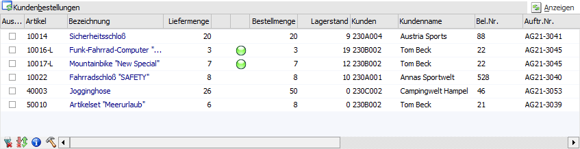
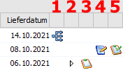

In der Tabelle "Kundenbestellungen" des Programms "Kundenbestellungen bearbeiten" werden alle für den gewählten Zeitraum (inklusive der weiteren Selektionen) fälligen Lieferungen angezeigt. Hierbei werden weitere Faktoren wie Mindestverteilungsprozentsatz, Mindestauslieferungsprozentsatz und Prioritäten entsprechend berücksichtigt. Die grundlegende Zuteilung von Liefermengen, wenn ohne Artikelreservierung gearbeitet wird, erfolgt nach der folgenden Reihenfolge:
ü Priorität lt. Kundenauftrag (0 = höchste Priorität / 99999 = niedrigste Priorität)
ü Lieferdatum aufsteigend (bei gleicher Priorität)
ü Sortierung gemäß Filter (optional)
Achtung
Die Tabelle wird durch die Anwahl des Buttons "Anzeigen" befüllt.
Hinweis
Im Zuge der Befüllung der Tabelle wird ggf. eine Sperrliste ausgegeben (gedruckt), in der all jene Artikelzeilen aufgelistet werden, die nicht ausgeliefert werden können (samt Sperrgrund). Zusätzlich werden diese, abhängig vom Grund, auch in der Tabelle "Sperrliste" angezeigt.

In der Tabelle stehen folgende Spalten zur Verfügung:
Ø Auswahl
Durch die Aktivierung dieser Option kann definiert werden, welche Artikelzeilen bei der Anwahl des Buttons "Liefermenge auf 0 setzen" berücksichtigt werden sollen.
Ø Artikel
In dieser Spalte wird die Artikelnummer des auszuliefernden Artikels angezeigt.
Ø Bezeichnung
In diesem Feld wird die Artikelbezeichnung aus dem Kundenauftrag dargestellt.
Ø Liefermenge
An dieser Stelle wird die auszuliefernde Menge vorgeschlagen und kann ggf. editiert werden.
Hinweis
Bei dem Liefermengenvorschlag werden Faktoren wie Lagerstand, Reservierungen, Kommissionierung und bereits erfolgte Teillieferungen berücksichtigt.
Hinweis zu Reservierungsartikeln
Bei Artikeln mit Reservierungskennzeichen (siehe Einstellungen in FAKT-Parameter und Artikelstamm) wird als Liefermenge die Reservierungsmenge vorgeschlagen. Wenn keine Reservierung vorhanden ist, wird die Liefermenge auf "0" gesetzt. Zusätzlich wird beim Editieren der Menge das Fenster "Kundenbestellungen - Artikelreservierungen bearbeiten" geöffnet, in dem die Reservierungen bearbeitet werden können (nähere Information hierzu im Kapitel Kundenbestellungen - Artikelreservierung bearbeiten).
Ø Menge 2
Handelt es sich um einen Artikel, der in 2 Mengen geführt wird, wird an dieser Stelle die Menge 2 dargestellt und kann ggfs. editiert werden.
Ø Lagerort
In der Spalte "Lagerort" wird über den Status der Lagerorterfassung Auskunft gegeben:
ü  - Rot
- Rot
Die auszuliefernde Menge wurde
bisher nicht auf Lagerorte aufgeteilt.
ü  - Orange
- Orange
Ein Teil der auszuliefernden
Menge wurde nicht auf Lagerorte aufgeteilt.
ü - Gelb
Bei Anwahl des Buttons "Lagerorte
automatisch aufteilen" wurde die Liefermenge, aufgrund von nicht vorhandenen
Lagerotbestand, automatisch reduziert (Option "Reduzierung der Liefermenge bei
autom. Aufteilung" ist aktiviert). Wenn zusätzlich im Auftrag eine
Teilliefersperre hinterlegt sein, so wird auf dieses in Form einer gelben Kugel
hingewiesen (ansonsten würde eine grüne Kugel dargestellt werden).
ü  - Grün
- Grün
Die auszuliefernde Menge wurde auf
Lagerorte aufgeteilt.
ü - Dunkelgrün
Es wurde auf einen Lagerort
mehr aufgeteilt, wie ausgeliefert wird. Wenn die Aufteilung in solch einem Fall
über mehrere Orte stattgefunden hat, dann wird eine orange Kugel angezeigt.
Hinweis
Per Doppelklick auf das Kugel-Symbol kann das Fenster "Lagerorte erfassen" geöffnet werden.
Ø Bestellmenge
An dieser Stelle wird die noch zu liefernde Bestellmenge angezeigt.
Ø Lagerstand
In der Spalte "Lagerstand" wird der aktuelle Lagerstand des Artikels angezeigt. Für eine bessere Übersicht wird die Menge direkt, jeweils um die Liefermenge, reduziert.
Hinweis
Bei einer Änderung der Liefermenge wird der Lagerstand nicht neu berechnet.
Ø Kunde / Kundenname / Bel.Nr. / Auftr. Nr.
In diesen Spalten werden die Kundennummer, der Kundenname, die Laufnummer des Belegs und die Auftragsnummer angezeigt.
Ø Hinweise
In der Spalte "Hinweise" werden Auslieferungshinweise aufgeführt. Folgende Hinweise können vorkommen:
ü ** Teillieferung wurde
durchgeführt
Es wird eine Teillieferung durchgeführt.
ü ** Teillieferung wurde
durchgeführt (Erster Problemartikel: 50005 - Badeshort "Marine")
Es wird eine
Teillieferung bei einer Handelsstückliste durchgeführt, wobei der erste
Problemartikel in Klammern aufgeführt wird. Grundvoraussetzung hierfür ist die
Aktivierung der Option "Lagerstand der Komponenten prüfen" (nähere Informationen
entnehmen Sie bitte dem Kapitel Kundenbestellungen bearbeiten -
Optionen).
ü ** Teillieferung aufgrund
Aufteilungsprozentsatz wurde durchgeführt
Es wird eine Teillieferung
durchgeführt, wobei mehrere Aufträge für einen Artikel vorhanden sind und der
Lagerstand nicht ausreichend ist. In diesem Fall kommt die Mindestverteilung zum
Tragen und errechnet die jeweilige Liefermenge (nähere Informationen hierzu im
Kapitel Mindestverteilung bei
Bearbeitung von Kundenbestellungen).
ü ** Teillieferung aufgrund nicht
vorhandenen Lagerortbestand wurde durchgeführt
Es wird eine Teillieferung
durchgeführt, da nicht genug Lagerortbestand vorhanden ist. Grundvoraussetzung
hierfür ist die Aktivierung der Option "Reduzierung der Liefermenge bei autom.
Aufteilung" (nähere Informationen entnehmen Sie bitte dem Kapitel Kundenbestellungen bearbeiten -
Optionen). Des Weiteren muss der Button " Lagerorte automatisch aufteilen"
genutzt worden sein.
ü Teilliefersperre! ** Teillieferung
aufgrund nicht vorhandenem Lagerortbestand wurde durchgeführt
Es wird eine
Teillieferung durchgeführt, da nicht genug Lagerortbestand vorhanden ist und es
besteht lt. Kundenauftrag eine Teilliefersperre auf Zeilenebene.
Grundvoraussetzung hierfür ist die Aktivierung der Option "Reduzierung der
Liefermenge bei autom. Aufteilung" (nähere Informationen entnehmen Sie bitte dem
Kapitel Kundenbestellungen bearbeiten -
Optionen). Des Weiteren muss der Button " Lagerorte automatisch aufteilen"
genutzt worden sein.
ü Aufteilung nicht möglich
Mit
Hilfe des Buttons "Hauptartikel ohne Auswahl aufteilen" sollen Hauptartikel mit
Ausprägung aufgeteilt werden. Dabei ist eine Aufteilung aufgrund folgender
Konstellationen nicht möglich:
ü Der entsprechende Beleg (Auftrag) wird zurzeit bearbeitet.
ü Im Artikelstamm des Hauptartikels
mit Ausprägung wurde die Option "Mehrfachausprägung" deaktiviert und im Beleg
eine Teilliefersperre aktiviert. Wenn nun keine Ausprägung vorhanden ist, deren
Lagerstand gleich oder größer der Liefermenge ist, erfolgt keine
Aufteilung.
Zusätzlich kann über die nachfolgende Meldung entschieden werden,
ob die Liefermenge automatisch auf "0" gesetzt werden soll.
ü Kreditlimit überschritten
Der
Kunde hat das hinterlegte Warn-Kreditlimit (Stammdaten - Konten - Personenkonten
- Register "FIBU" - Einstellung "Kreditlimit") überschritten.
Ø Preis
In dieser Spalte wird der Einzelpreis aus dem Kundenauftrag angezeigt.
Ø FW
Handelt es sich bei dem Kundenauftrag um einen Beleg, welcher in Fremdwährung geführt wird, wird die Fremdwährung in dieser Spalte angezeigt.
Ø Liefertage
In der Spalte "Liefertage" werden die originalen Liefertage aus dem Kundenauftrag, d.h. in wieviel Tagen war die Lieferung fällig, dargestellt.
Ø Lieferdatum
An dieser Stelle wird das Lieferdatum gemäß Kundenauftrag angezeigt.
Ø standardmäßige Spalten nach "Lieferdatum"

ü 1- Hauptartikel mit
Ausprägung
Handelt es sich bei dem Artikel um einen Hauptartikel mit
Ausprägung, bei dem noch keine Aufteilung auf die einzelnen Ausprägungen erfolgt
ist, so wird in dieser Spalte das Icon  angezeigt.
angezeigt.
Ausprägen durchführen
Durch einen Doppelklick auf die
Artikelzeile kann das Fenster "Ausprägungen erfassen" geöffnet und die
Aufteilung auf die Ausprägungen vorgenommen werden.
Andernfalls ist eine
automatische Aufteilung durch das Anklicken des Buttons "Hauptartikel ohne
Auswahl aufteilen" möglich. Dabei werden nur Zeilen des Typs "Hauptartikel mit
Ausprägung und ohne Aufteilung" berücksichtigt, bei denen eine Liefermenge
größer "0" hinterlegt ist.
Hinweis
Nach erfolgter Ausprägung wird in "Kundenbestellungen bearbeiten" nur noch die gewählte Ausprägung und nicht mehr der Hauptartikel angezeigt.
Achtung
Im Gegensatz zu Liefermengeneingaben wird eine durchgeführte Ausprägung direkt abgespeichert und in dem zu Grunde liegenden Auftrag zurückgeschrieben. Sollte eine falsche Ausprägung gewählt worden sein, muss dieses im Auftrag korrigiert werden.
ü 2 - Komponenten
Handel es sich
bei dem Artikel um eine zu produzierende Stückliste, so können über diese Spalte
die Komponenten ein- und ausgeblendet werden. Grundvoraussetzung hierfür ist die
Aktivierung der Option "Lagerstand der Komponenten prüfen" (nähere Informationen
entnehmen Sie bitte dem Kapitel Kundenbestellungen bearbeiten -
Optionen).
ü 3 - Handelsstückliste
Sollte es
sich bei dem Artikel um eine Handelsstückliste handeln, welche "produziert"
werden muss (also nicht vom Lager entnommen werden soll), so wird das Icon angezeigt.
ü 4 - Kommissionierung
Es handelt
sich um Artikelzeilen mit bereits (teil-)erfolgter Kommissionierung. Durch
unterschiedliche Symbole wird dabei auf den aktuellen Kommissionierungsstatus
hingewiesen.
ü = vollständig kommissioniert
ü = teilweise kommissioniert
Zusätzlich erfolgt beim Speichern der Liefermengen ("Ok"-Button bzw. F5-Taste) eine Sicherheitsabfrage, da anschließend die Kommissionierungen gelöscht werden.
ü 5 - Originaldruck
Wenn bereits
die Packliste für diese Artikelzeile im Originaldruck ausgegeben wurde, wird
darauf per Symbol hingewiesen.
Zusätzlich erfolgt
beim Speichern der Liefermengen ("Ok"-Button bzw. F5-Taste) eine
Sicherheitsabfrage, da anschließend das Packlisten-Originaldruck-Kennzeichen
zurückgesetzt wird.
Hinweis
Wurden für einzelne Lagerorte der Artikelzeile eine Packliste im Originaldruck ausgegeben, wird darauf nur hingewiesen (Symbol und Sicherheitsabfrage), wenn die Option "Originaldruck der Lagerorte prüfen" aktiviert wurde.
Ø bestätigtes Lieferdatum (Bezeichnungen lt. Einstellung in den Belegoptionen)
An dieser Stelle wird das bestätigte Lieferdatum (auch "Lieferdatum 2" genannt) gemäß Kundenauftrag angezeigt.
Tabellenbuttons
Ø Beleginfo anzeigen
Durch die Anwahl des "Info"-Buttons kann, ausgehend von der gerade selektierten Zeile, der dahinterliegende Beleg angesehen werden.
Ø Alle Zeilen markieren
Durch das Anklicken des Buttons "Alle Zeilen markieren" werden alle Zeilen in der Tabelle aktiviert.
Ø Selektion umkehren
Durch das Anklicken des "Selektion umkehren"-Buttons werden alle aktivierten Zeilen deaktiviert und alle deaktivierten Zeilen aktiviert.
Ø Lagerorte erfassen
Durch die Anwahl des Buttons "Lagerorte erfassen" wird das Fenster "Lagerorte erfassen" geöffnet.
Achtung
Die Speicherung der Lagerorterfassung findet temporär statt, d. h. bei einem erneuten Aufruf von "Kundenbestellungen bearbeiten" (mit den gleichen Auftragszeilen) werden die zuvor getätigten Lagerortzuweisungen verworfen.
Ø Ausgabe Excel
Durch Anwahl des Buttons "Ausgabe Excel" wird der Inhalt der Tabelle an Microsoft Excel übergeben.
Ø Tabelleneinstellungen speichern
Die Spalten einer Tabelle können grundsätzlich an beliebige Positionen verschoben, bzw. in der Breite entsprechend angepasst werden. Durch Anwahl des Buttons "Tabelleneinstellungen speichern" werden die Einstellungen benutzerspezifisch gespeichert und bei dem nächsten Aufruf des Programmpunktes wieder vorgeschlagen.
Ø Gesamteinstellungen speichern
Im Gegensatz zu "Tabelleneinstellungen speichern" können mit "Gesamteinstellungen speichern" mehrere Tabellenaufbauten gespeichert und nach Wunsch geladen werden. Zusätzlich werden Sonderfunktionen der Tabelle (z.B. "Spalte gruppieren") ebenfalls bei der Speicherung bedacht.